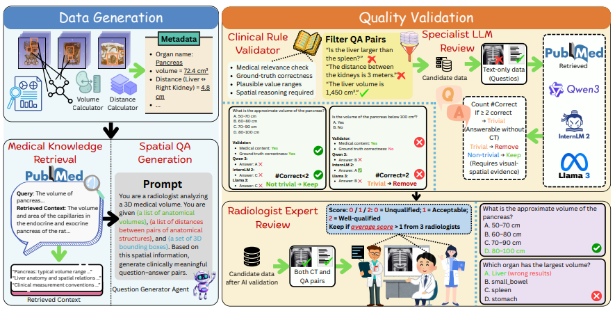
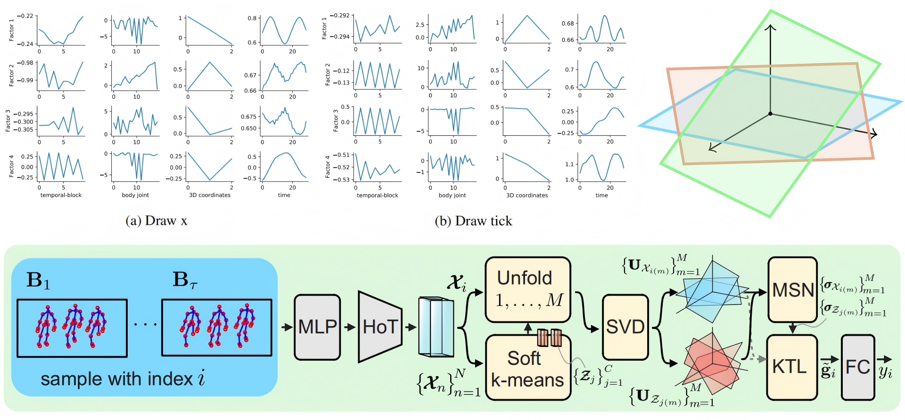
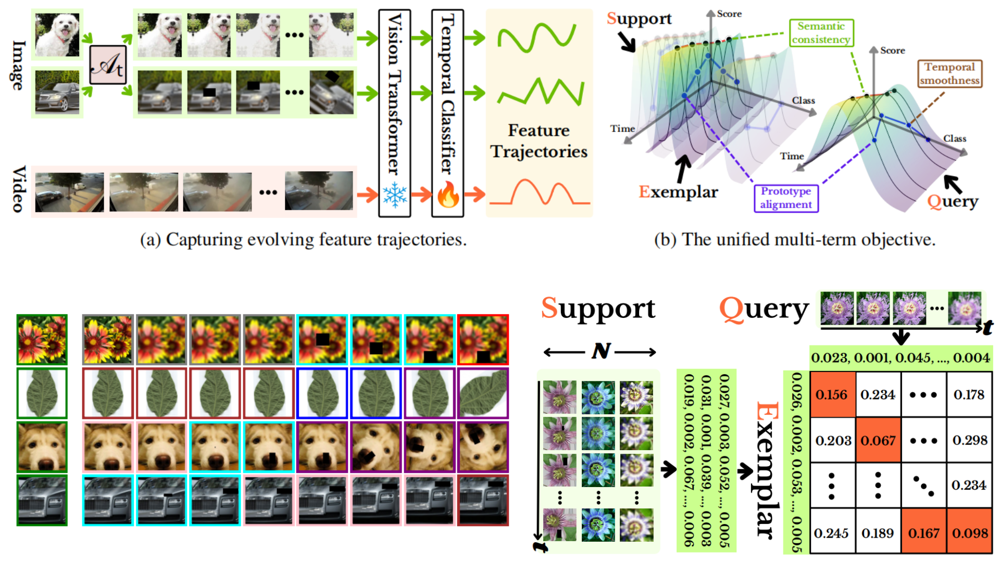
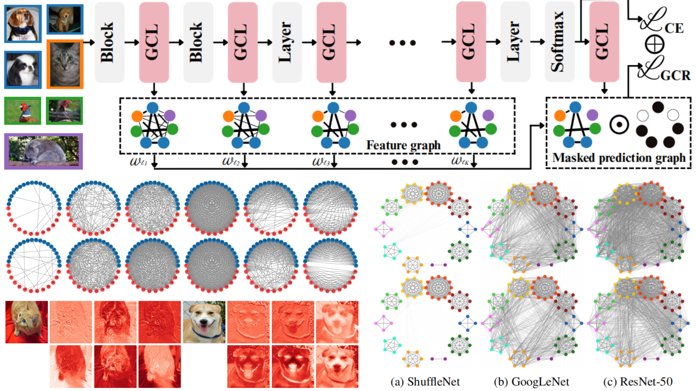
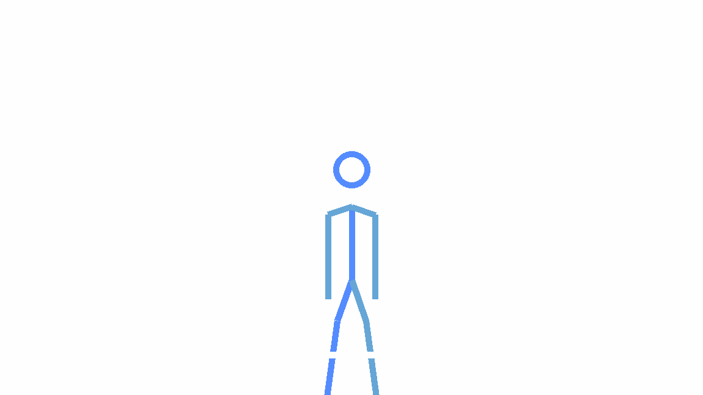
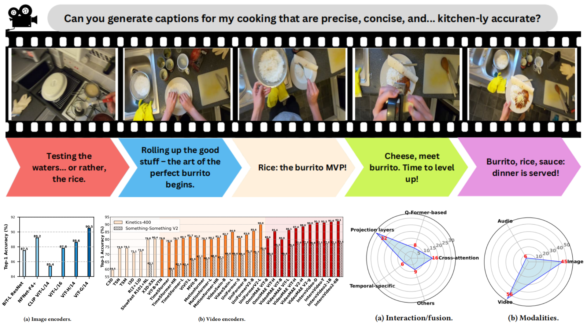
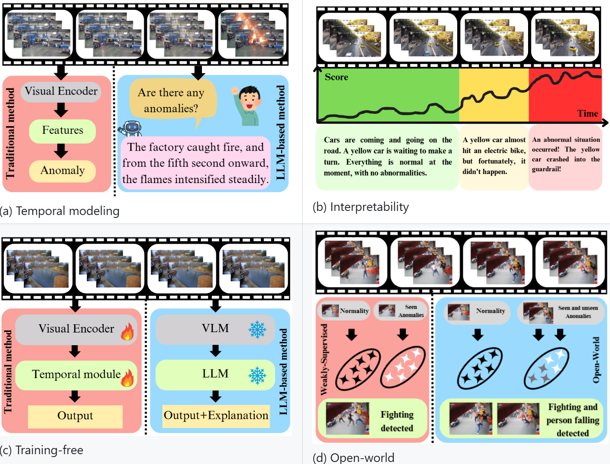

About
News
- I'm excited to join the Computer Sciences PhD program at UW–Madison.
- Subspace Kernel Learning on Tensor Sequences was accepted at ICLR 2026.
- I presented my work at NeurIPS 2025 in San Diego, USA.
- Learning Time in Static Classifiers was accepted at AAAI 2026.
- Joined the Xu Lab as a research intern at CMU.
- Received the NeurIPS 2025 Scholar Award.
- Graph Your Own Prompt was accepted at NeurIPS 2025.
- Delivered an invited talk Echoes in the Model: When Features Reflect Predictions at the Data61/CSIRO ICVG Reading Group.
- I presented my works at WWW 2025 in Sydney, Australia.
- Appointed as an ARC Research Hub visiting scholar.
- The Journey of Action Recognition won the Best Paper Award at the Companion Proceedings of the ACM Web Conference 2025.
- The Journey of Action Recognition was accepted for Oral Presentation at the Companion Proceedings of the ACM Web Conference 2025.
- Do Language Models Understand Time? was accepted for Oral Presentation at the Companion Proceedings of the ACM Web Conference 2025.
- Joined the TIME Lab as a research assistant at ANU.
Publications

Beyond Medical Diagnostics: How Medical Multimodal Large Language Models Think in Space
arXiv 2026

Subspace Kernel Learning on Tensor Sequences
ICLR 2026

Learning Time in Static Classifiers
AAAI 2026

Graph Your Own Prompt
NeurIPS 2025

The Journey of Action Recognition
WWW 2025 (Companion)

Do Language Models Understand Time?
WWW 2025 (Companion)

Quo Vadis, Anomaly Detection? LLMs and VLMs in the Spotlight
arXiv 2024